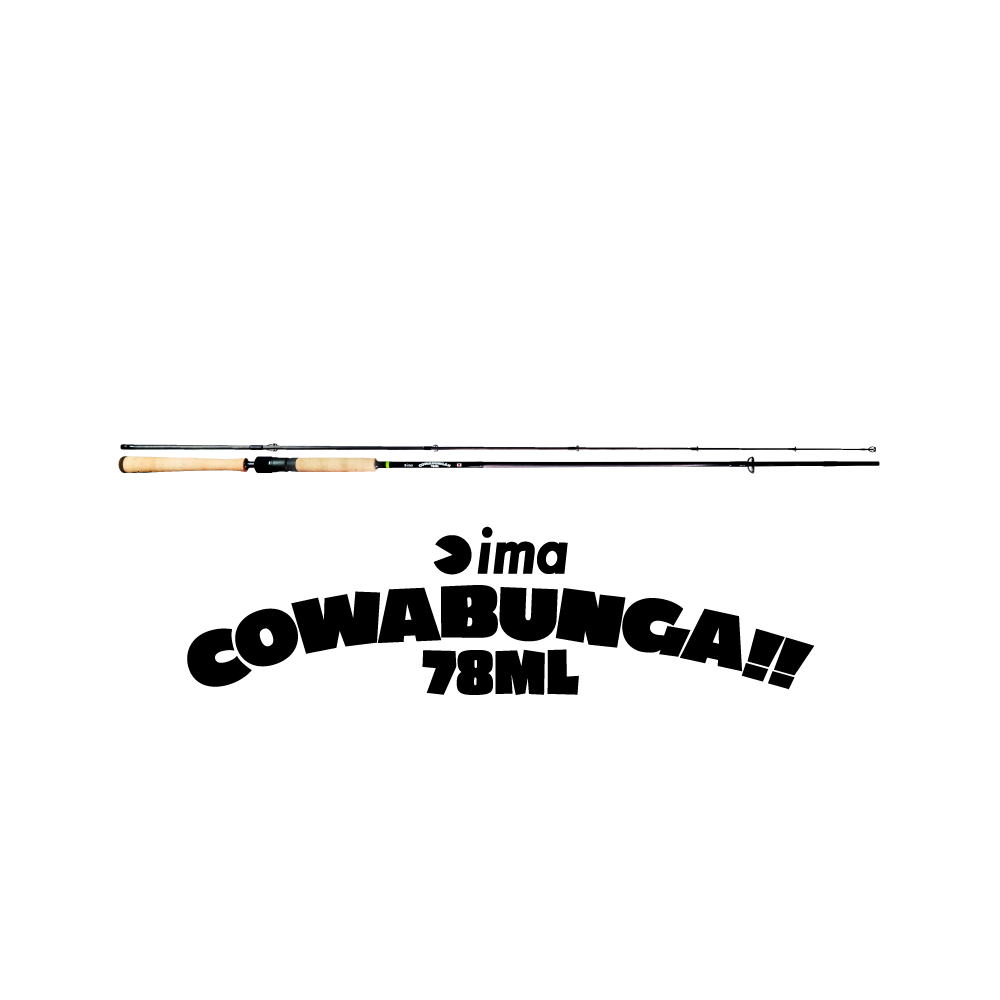
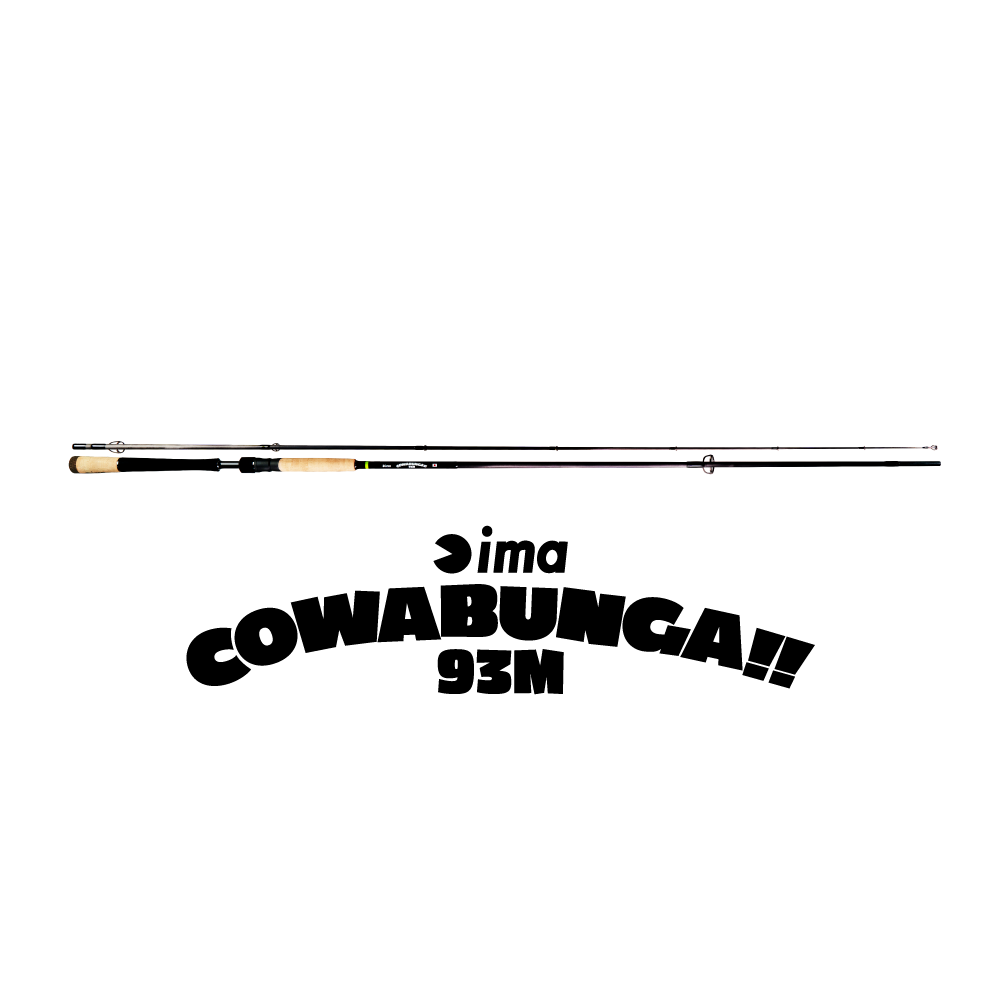
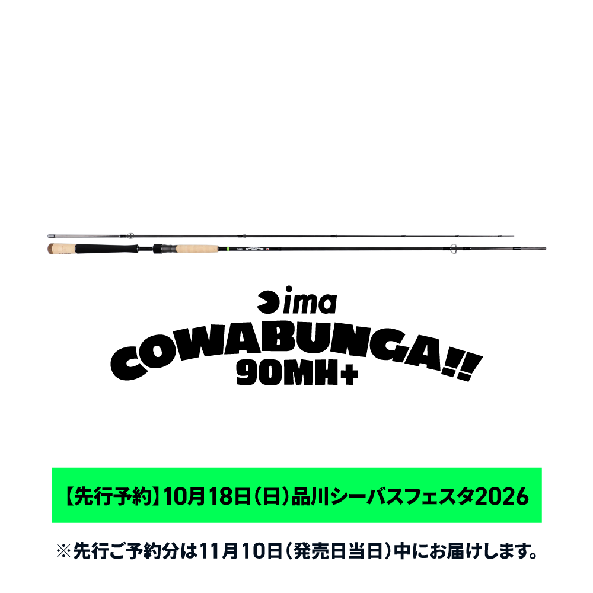
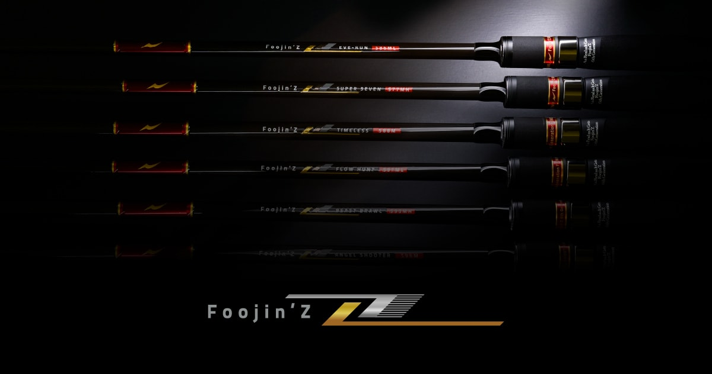
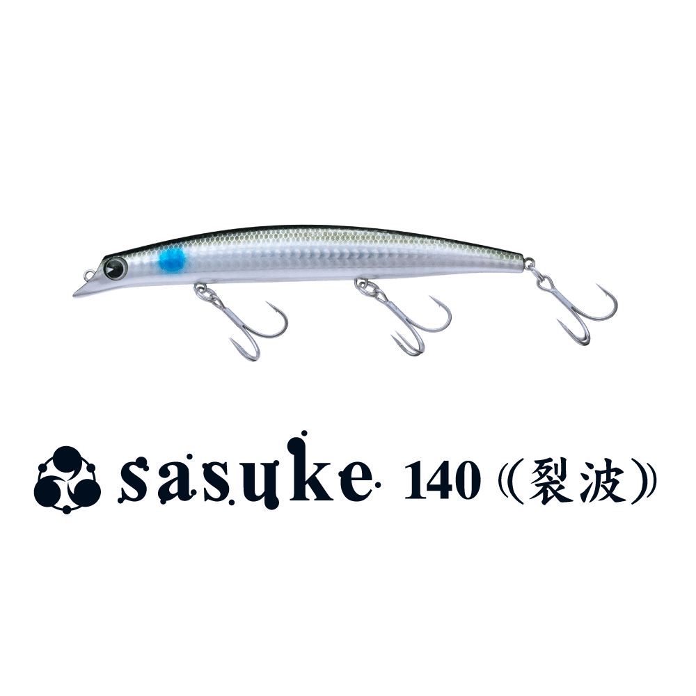

カワバンガ
（COWABUNGA!!）
カワバンガ（COWABUNGA!!）はima（アイマ）のシーバスロッドです。
2024年にimaから約10年ぶりにリリースされた、メイドインジャパンのハイスペックロッド。軽量でしなやか、トルクも十分で、美しくよく曲がる“「曲がる」王道ロッド”として、魚とのやり取りはもちろん、あらゆる動作で釣り本来の魅力を感じさせてくれます。

画像出典:ima公式HP
スペック
- メーカー
- ima（アイマ）
- タイプ
- シーバスロッド（スピニング）
- モデル
- 78ML／93M／90MH+
- 長さ
- 7'8"〜9'3"
- 自重
- 105〜145g
- アクション
- レギュラー
- 生産国
- 日本（メイドインジャパン）
- 価格
- 77,000〜79,200円（税込）
- 販売
- ima公式オンラインストア限定
▼今すぐチェック
カワバンガの特徴
強さを硬さで出さない、“曲がって獲る”ためのシーバスロッド
-
軽くしなやかで、トルクも十分
軽量でしなやかなのにトルクがあり、美しくよく曲がる。魚とのやり取りでロッドが曲がり込む感覚を楽しめる。
-
メイドインジャパンのハイスペックロッド
日本製のハイスペックロッドとして作られ、キャストからファイトまで、あらゆる動作で釣り本来の魅力を感じられるよう設計されている。
-
用途の異なる3モデル
港湾・湖・ボートなどショートレングスが強い場面の78ML、シーバスゲームど真ん中の93M、障害物の多いフィールドで強引にコントロールできる90MH+の3モデル。
カワバンガの選び方
まずは「どこで・どんなルアーを投げるか」でモデルを選ぶのが基本です。
河川・サーフ・干潟などのオープンエリアでミノーからスピンテール、メタルジグまで投げるなら93M。港湾部や湖、ボートなどで軽量ルアーから20g後半まで幅広く使うなら78ML。小磯や高低差の激しい場所など、障害物の多いフィールドで重めのルアーも使いたいなら90MH+がオススメです。
カワバンガのが向いている釣り
しっかり曲がるロッドで、シーバスとのやり取りを楽しみたい人に向いたシリーズです。
迷ったら、シーバスゲームど真ん中のスペックの93Mから選ぶのがオススメ。ima公式オンラインストア限定販売なので、購入は公式ストアから行います。
ワンポイント
90MH+は、軽いルアーを投げると柔らかく、重いルアーを投げると強く感じる「バリアブルテーパー」を採用。90〜120mmのルアーを投げつつ、より重いルアーも使いたいときの選択肢です。
ima公式オンラインストア限定販売で、他の商品とあわせての注文はできないなど購入方法に条件があります。購入前に公式サイトの注意事項を確認しましょう。
カワバンガのモデル
| モデル | 長さ／自重 | ルアー重量／ライン |
|---|---|---|
| 78ML | 7'8"／105g | 4〜28g／PE0.6〜1.0号 |
| 93M | 9'3"／135g | 7〜34g／PE0.8〜1.5号 |
| 90MH+ | 9'0"／145g | 8〜45g／PE0.8〜2.0号 |
78MLは港湾・湖・ボート、93Mは河川・サーフ・干潟などのオープンエリア、90MH+は小磯や障害物の多いフィールド向け。90MH+は2026年11月10日発売予定のモデルです。
ラインナップ
カワバンガの3モデルを紹介します。

78ML港湾部や湖、ボートなどショートレングスが強い場面で、場所や魚種にかぎらず自由に遊べるモデル。

93Mミノーからスピンテール、メタルジグまで投げられる、シーバスゲームど真ん中のスペック。

90MH+バリアブルテーパーで、障害物の多いフィールドで魚を強引にコントロールしたいときに。
画像出典:ima公式HP
カワバンガとあわせてチェックしたいアイテム
-
 シブミ（Shibumi）
ima
詳細はこちら＞
シブミ（Shibumi）
ima
詳細はこちら＞
imaのメイドインジャパン渓流ロッド。辺見哲也氏がフリップキャストに特化させたハイエンドモデル。
-

フージンZ 6th アピア 詳細はこちら＞アピアのフラッグシップシーバスロッド。第3世代カーボンとX-FORCE100で飛距離・感度・パワーを突き詰めたい人に。
-

サスケ140裂波 ima 詳細はこちら＞imaのフローティングミノー。93Mや90MH+で投げたい、ヒラスズキ・ランカー狙いの定番。